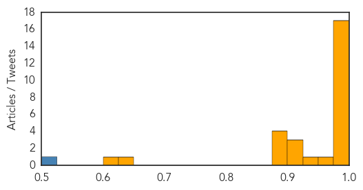
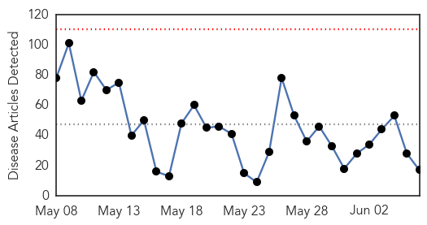
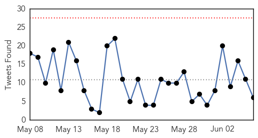
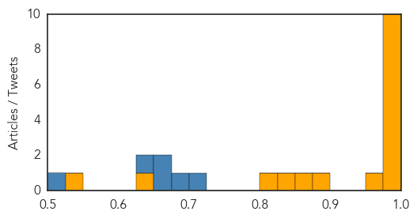

MERS
30-Day Web Trend
16 alerts, 2 warnings

30-Day Twitter Trend
Article Locations
Article Confidences
Top Articles:
- 0.999
- South Korea reports nine new MERS cases
- 0.998
- Gulf Daily News Local News Caution for citizens as Mers hits South Korea
- 0.998
- WHO to take part in mission following MERS outbreak in South Korea
- 0.998
- WHO: No need for travel advisory amid MERS outbreak in S. Korea
- 0.998
- Vietnam puts together 4 fast-response teams to confront MERS-CoV
- 0.997
- First MERS patient in China ...｜Society｜WCT
- 0.997
- South Koreans squabble about MERS as more cases appear : World, News
- 0.996
- Quick Response And Low Infectivity Could Avert MERS Epidemic
- 0.995
- Korea names MERS-affected hospital, tracks all visitors, news, Health News, AsiaOne YourHealth
- 0.995
- Pinoys in Korea urged to take precautions against MERS-CoV
- 0.992
- China prepares to tackle MERS｜Society｜WCT
- 0.991
- Third MERS patient dies in South Korea
- 0.991
- UN health agency dispatches team to Seoul after fourth death
- 0.990
- Prevention methods initiated over MERS fears
- 0.986
- Untitled Article
- 0.985
- As MERS Fears Spread, History Offers Sobering Lesson
- 0.977
- MERS shows no mercy in Saudi Arabia, South Korea
- 0.961
- Filipinos in S. Korea urged to guard against MERS-CoV
- 0.946
- FOR MERS-CoV: DOH-7 remains on heightened alert
- 0.922
- South Korean MERS death toll rises again
- 0.912
- Palace asks Filipinos in South Korea to take precautions vs Mers-Cov
- 0.907
- MERS in Saudi Arabia and in Korea
- 0.895
- Palace asks Filipinos in South Korea to take precautions vs MERS-CoV
- 0.892
- Filipinos in South Korea told: Take precautions vs MERS-CoV
- 0.876
- Cambodia urges laborers in S. Korea to be vigilant over MERS
- 0.875
- KBS World Radio
- 0.640
- Major carriers will not cut ...｜Society｜WCT
- 0.608
- Nong Khai border post steps up measures against MERS-CoV spread
Top Tweets:
- 0.501
- AFD Blog `Korean MERS Sequences Closely Match Middle Eastern Virus' MERS-CoV http://t.co/oXCbAZeJSu
Ebola
30-Day Web Trend
0 alerts, 0 warnings

30-Day Twitter Trend
0 alerts, 0 warnings

Article Locations

Article Confidences
Top Articles:
- 1.000
- Fourth patient dies of MERS in South Korea
- 1.000
- Britain throws weight behind plans for flying-doctor unit to tackle world diseases
- 0.999
- Inside the $105 million lab that wants to wipe out MERS and Ebola
- 0.994
- Guinea extends Ebola emergency measures
- 0.993
- Guinea extends Ebola emergency measures
- 0.990
- Stopping the next pandemic today
- 0.985
- The Ebola Review, Part II
- 0.982
- This Is What Experts Say We Need To Do To Prevent Another Ebola
- 0.980
- The Courier Ohio Has Monitored About 375 Travelers Under Ebola Protocols
- 0.979
- Why isn't there a better test to detect Ebola?
- 0.973
- How Women Helped Lead the Fight Against Ebola in Liberia
- 0.881
- Health Leaders Urge the Need of Rapid Response Unit for Ebola
- 0.874
- David Cameron wants Black Death squad of top doctors in case killer epidemic returns
- 0.841
- Global health leaders call on world leaders to share the responsibility keeping the planet free from infectious outbreaks
- 0.825
- three crucial factors for health
- 0.629
- Beyond Ebola, laying foundations for Caribbean regional health security
- 0.540
- Liberia's school systems recover after Ebola outbreak
Top Tweets:
- 0.703
- Guinea extends Ebola emergency measures - Yahoo News http://t.co/U6T7KbE2Ye ebola EVD
- 0.685
- Why isn't there a better test to detect Ebola? - PBS NewsHour (blog) http://t.co/ytPDNTLimS ebola EVD
- 0.656
- Epicentre of initial Ebola outbreak in tri-border area around Guéckédou Guinea has not recorded a single case for over 100 days.
- 0.652
- Ohio has monitored about 375 travelers under Ebola protocols - Washington Times http://t.co/QReKISeXj7 ebola EVD
- 0.629
- The Ebola Review Part I - Foreign Policy (blog) http://t.co/mYt5wrGNeU ebola EVD
- 0.510
- Mass malaria drug administration helps in ↓ing transmission of disease in Ebola effected regions of Sierra Leone http://t.co/bTwIxCNguv